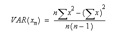

This function returns the variance based on a sample of a population, which uses only numeric values.
VAR(value1,value2,...)
VAR(array)
VAR(array1,array2,...)
Each argument can be a double-precision floating-point value, an integer value, or an array (cell range) of these. Up to 255 arguments may be included. You can use a single array (cell range) instead of a list of values. You can use multiple arrays (cell ranges) as well.
The variance returns how spread out a set of data is.
This function uses the following equation to calculate the variance, where n is the number of values.

where x is the value and n is the number of values.
This function assumes that its arguments are a sample of the population. If your data represents the entire population, then compute the variance using the VARP function.
This function differs from VARA, which accepts text and logical values as well as numeric values.
Accepts numeric data for all arguments. Returns numeric data.
VAR(B3,C4,B2,D10,E5)
VAR(A1:A9)
VAR(R1C2,100,R2C5,102)
VAR(R1C1:R9C1)
VAR(R1C1:R1C9)
VAR(98,85,76,87,92,89,90) gives the result 45.8095238095